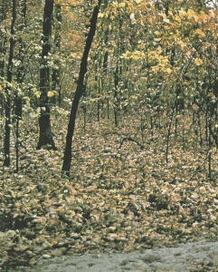
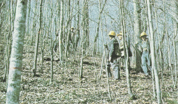
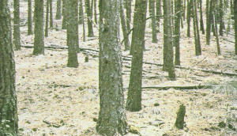

|
|
Fire Behavior Fuel Model 9 -- Long Needle or Hardwood Litter |
Anderson (1982) classifies Fire Behavior Fuel Model 9 in theTimber Group and describes it as follows:
Fires run through the surface litter faster than model 8 and have longer flame height. Both long-needle conifer stands and hardwood stands, especially the oak-hickory types, are typical. Fall fires in hardwoods are predictable, but high winds will actually cause higher rates of spread than predicted because of spotting caused by rolling and blowing leaves. Closed stands of long-needled pine like ponderosa, Jeffrey, and red pines or southern pine plantations are grouped in this model. Concentrations of dead-down woody material will contribute to possible torching out of trees, spotting, and crowning.
Anderson's (1982) photographs 25, 26, and 27 are examples of fuels fitting this model.
|  | Anderson (1982) Photo 25, Fire Behavior Fuel Model 9. Western Oregon (USA) white oak fall litter; wind tumbled leaves may cause short-range spotting that may increase ROS above the predicted value. |
|  | Anderson (1982) Photo 26, Fire Behavior Fuel Model 9. Loose hardwood litter under stands of oak, hickory, maple, and other hardwood species of the eastern USA. |
|  | Anderson (1982) Photo 27, Fire Behavior Fuel Model 9. Long-needle forest floor litter in a ponderosa pine stand near Alberton, Montana (USA). |